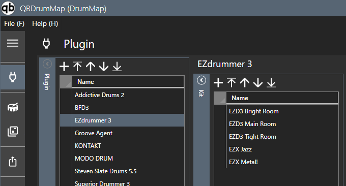

Plug-in
Edits the drum map.
Edit drum map
Set plug-in and kit information.

- Select a plugin from the plugin list. Add the plugin if it is not present.
- Select a kit from the kit list. If you don't have a kit, add one.
- Configure the map using the pitch list.
Pitch list
Set the drum map information defined in VST (drum sound source).

-
Name
- Enter the pitch name. If it is blank, the pitch will not be set.
-
Articulation
- Open the articulation selection screen from the search button and select the appropriate one.
-
Separator
- Select the appropriate one from the combo box.
Filter
Filter by pitch name and articulation name.

You can specify a wildcard using an asterisk (*).
- If not specified, exact match
- If placed at the beginning of the keyword, match the suffix
- If placed at the end of the keyword, match the beginning
- If placed before or after the keyword, match partially
Sort
- Enter each item of the applicable pitch line.
-
You can change the sort order by clicking on the column heading.
- The first click will sort it in ascending order, the second will sort it in descending order, and the third will return it to the initial state.
- Some editing functions are limited in the sorted state. If you want to edit it, please return it to the initial state.
Sound Check

Clicking the speaker icon in each row of the pitch list will send note-on/off messages for that row to the MIDI port.
Context menu
Displayed by right-clicking on the pitch list.

Articulation map
Displayed when called from the context menu. Here you can see which pitches are assigned to which articulations.

Displays the pitch associated with the articulation.
Checked items in the Sub column are automatically interpolated pitches.
Plug-in option

-
Sound Check Velocity
- Set the note-on velocity value that is output when the sound check button is pressed.
-
Input Fixed Enable
- MIDI In Fixed Pitch.
-
MIDI In Device
- Select the port to which the MIDI keyboard is connected. If not required, please select blank. If available, "Connected" will be displayed; if unavailable, "Not Connected" will be displayed.
-
MIDI In Fixed Pitch
-
Specifies the pitch of MIDI keyboard note on/off messages to be accepted.
If you specify this value and enable "Input Fixed", MIDI keyboard input is converted to the note on/off message selected in the pitch list and output.
-
Specifies the pitch of MIDI keyboard note on/off messages to be accepted.
-
MIDI Out Device
- Select the MIDI message output destination. If available, "Connected" will be displayed; if unavailable, "Not Connected" will be displayed.